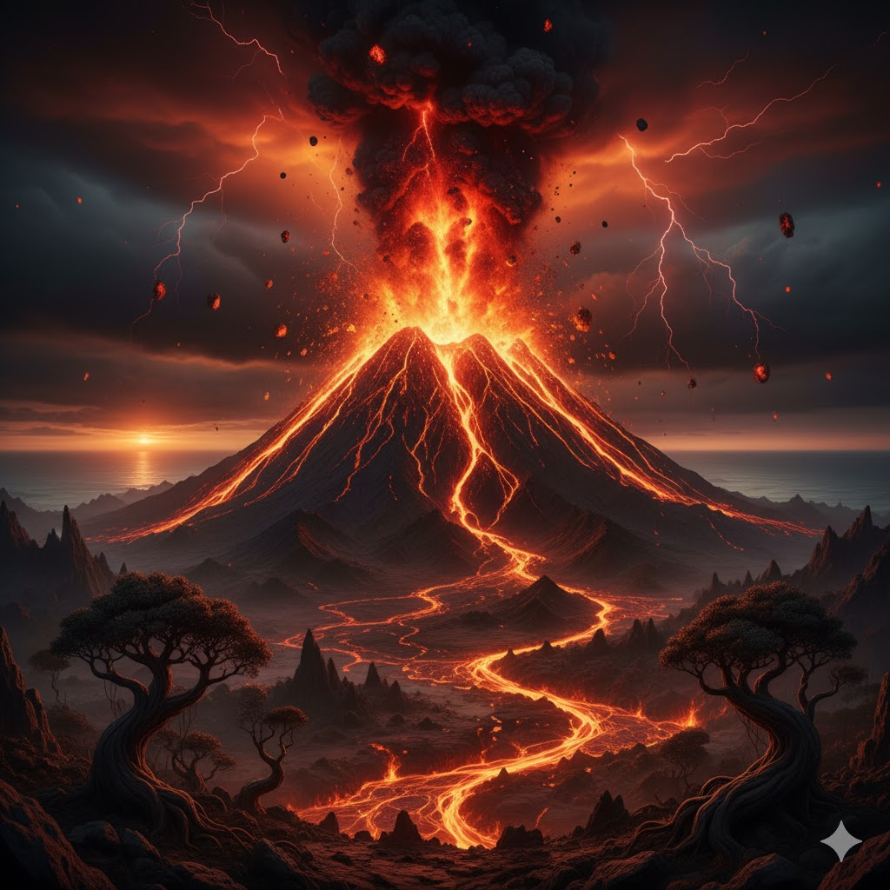
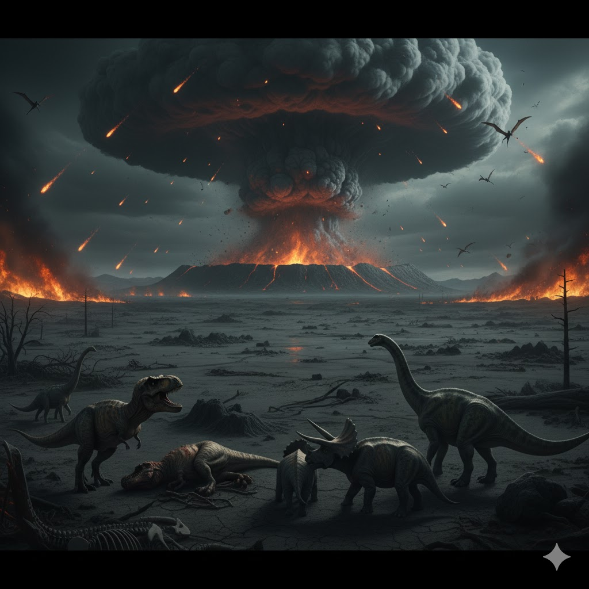
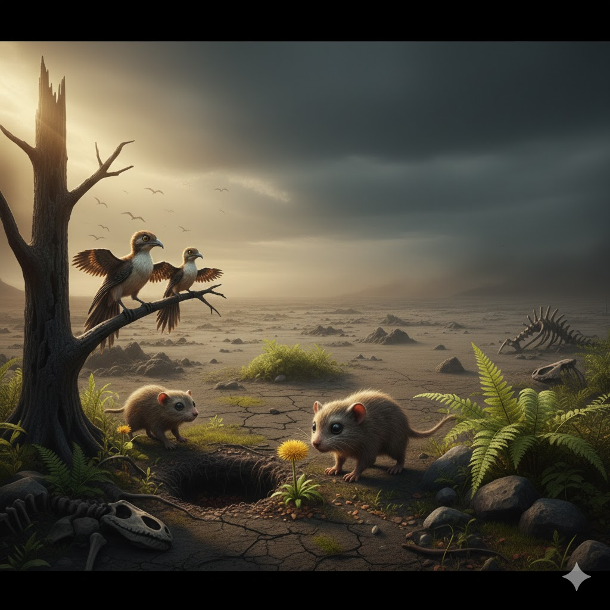
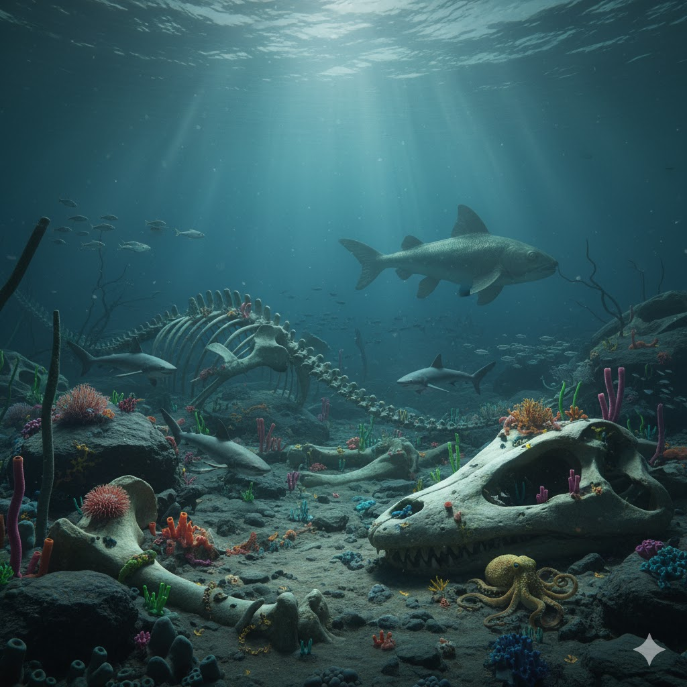
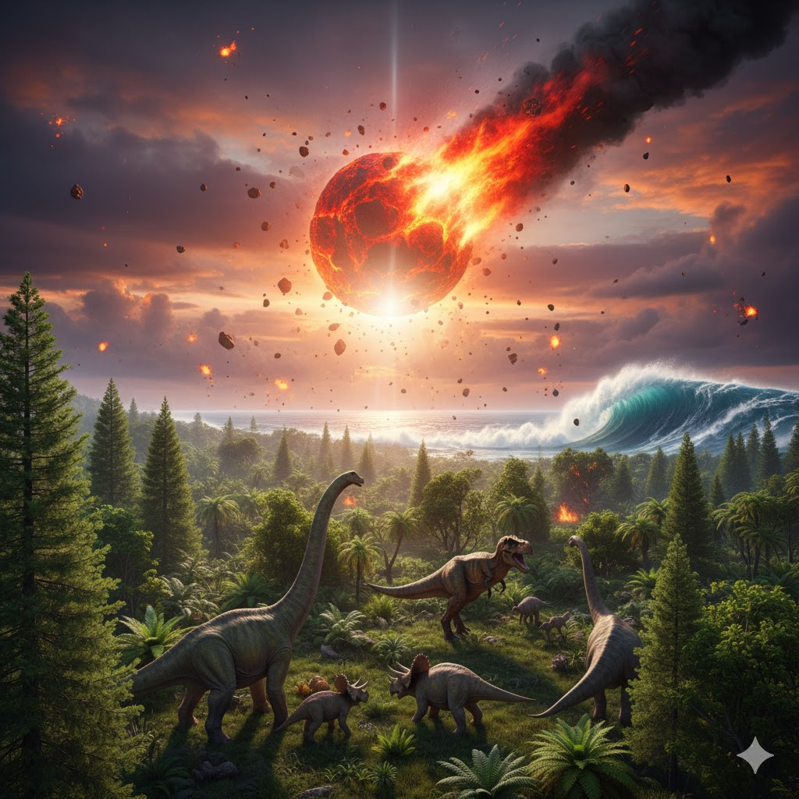

Teoria Principal
Teoria Principal
Impacto do Asteroide
Um asteroide colidiu com a Terra há cerca de 66 milhões de anos, liberando energia equivalente a bilhões de bombas nucleares.
- Local do impacto: Chicxulub, México
- Efeito: Escuridão global e queda na temperatura

Teoria Alternativa
Vulcanismo Intenso
As erupções nos Traps do Decã, na Índia, liberaram gases tóxicos e CO₂, alterando drasticamente o clima global.
- Duração: Milhares de anos
- Consequência: Chuva ácida e mudanças climáticas

Consequência
Como Isso Afetou a Vida
O impacto e as erupções geraram uma “noite global”, reduzindo a luz solar e causando colapso nas cadeias alimentares.
- Duração: Anos de escuridão
- Temperatura média: -10°C em várias regiões

Sobreviventes
Aves e Mamíferos
Enquanto grandes répteis sumiram, pequenos mamíferos e aves resistiram, adaptando-se ao novo ambiente.
- Sobreviventes notáveis: Aves, crocodilos e tartarugas
- Motivo: Tamanho pequeno e dieta variada

Vida Marinha
Espécies do Oceano
Alguns peixes, tubarões e moluscos conseguiram sobreviver, adaptando-se às novas condições dos oceanos.
- Exemplo: Tubarão-cobra
- Ambiente: Profundezas oceânicas

Efeitos Globais
Consequências do Impacto
O choque do asteroide levantou toneladas de poeira e enxofre na atmosfera, bloqueando a luz solar e alterando o clima global por anos.
- Temperatura global: Queda brusca de até 15°C
- Resultado: Destruição das plantas e colapso alimentar